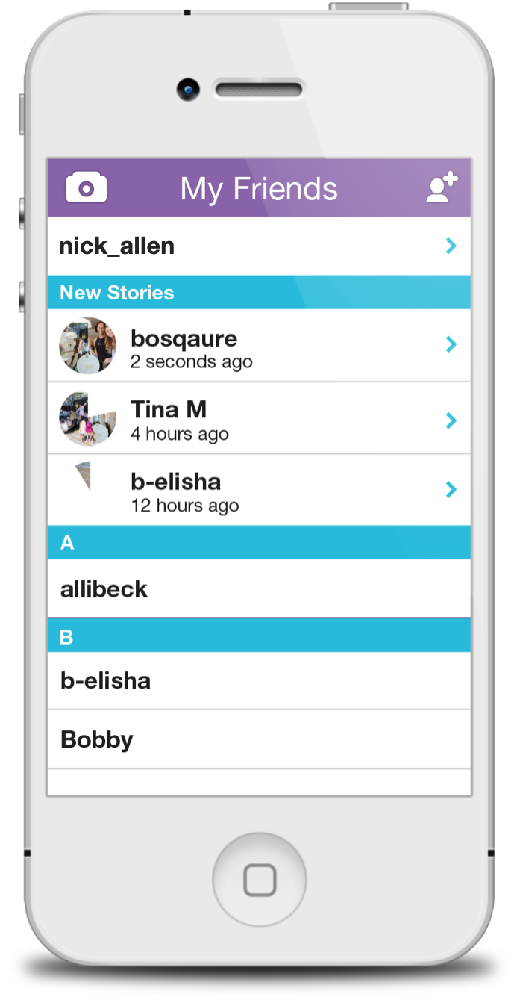
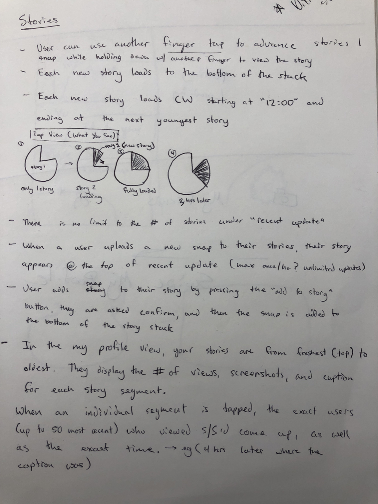
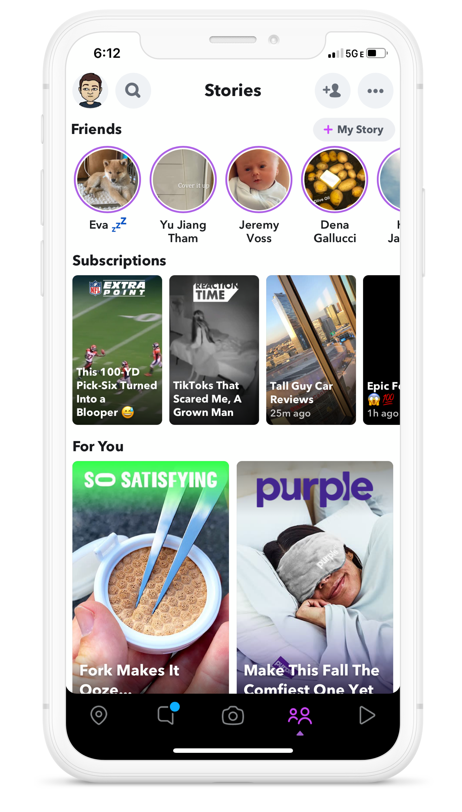

Snapchat • Stories
I designed Stories. I didn't come up with the concept - but in 2013 the general idea was explained to me, and it was my job to build the product. I was given the Snapchat "friends" screen as the place they would live.
Before it was copied by Instagram and added to a bunch of other apps, Stories was simply the solve for a need we'd heard from Snap's users: "I want a 'send-to-all' button," in a way that didn't spam all their friends.

Over the years, the product evolved in many ways, making way for new Story types as well as Discover, Snap's publisher platform.
Stories is now the dominant form of video and photo sharing on social media. It's certainly come a long way from this first "spec" that was written as to how v1 would work.

If you read this far, add me on Snap -- I still post Stories there.
